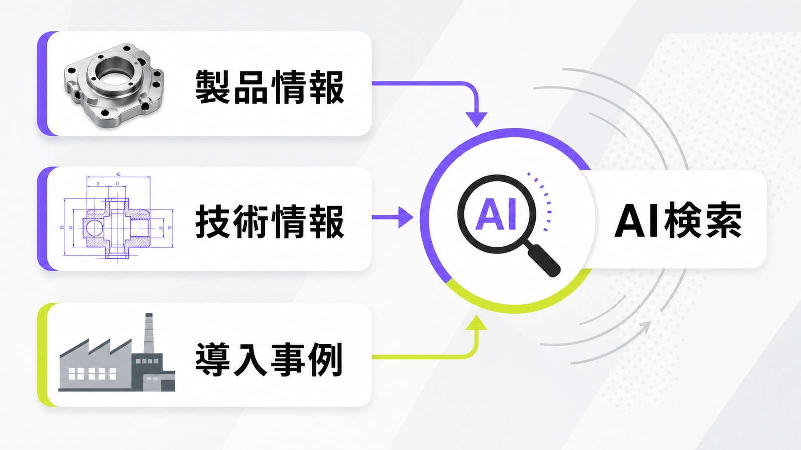
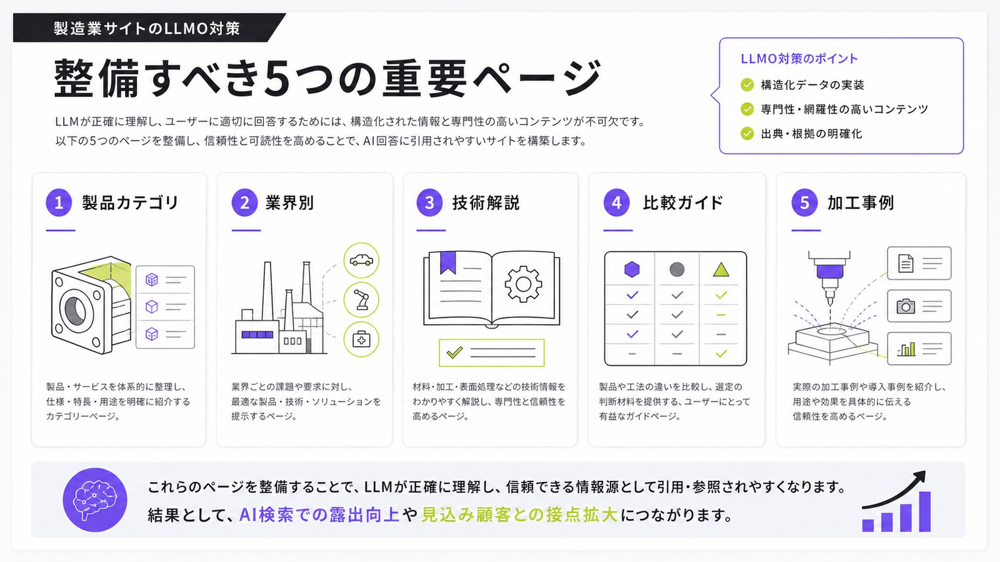
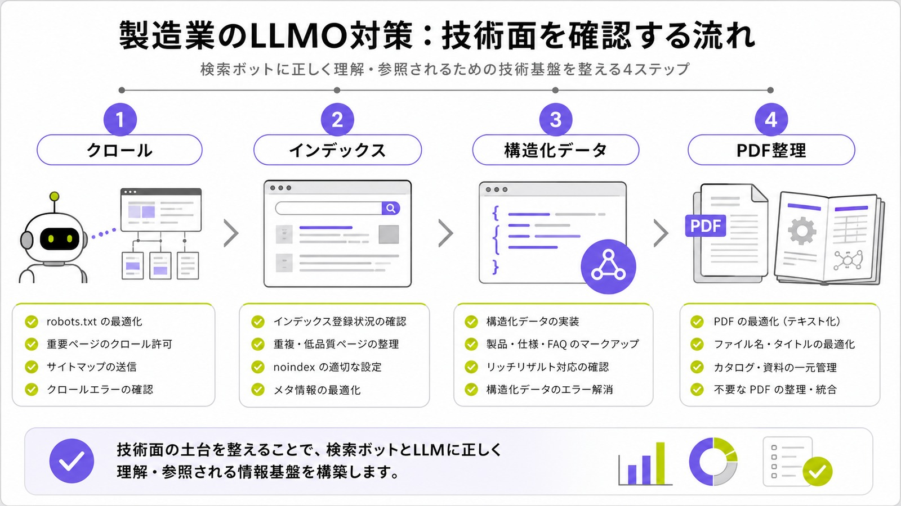
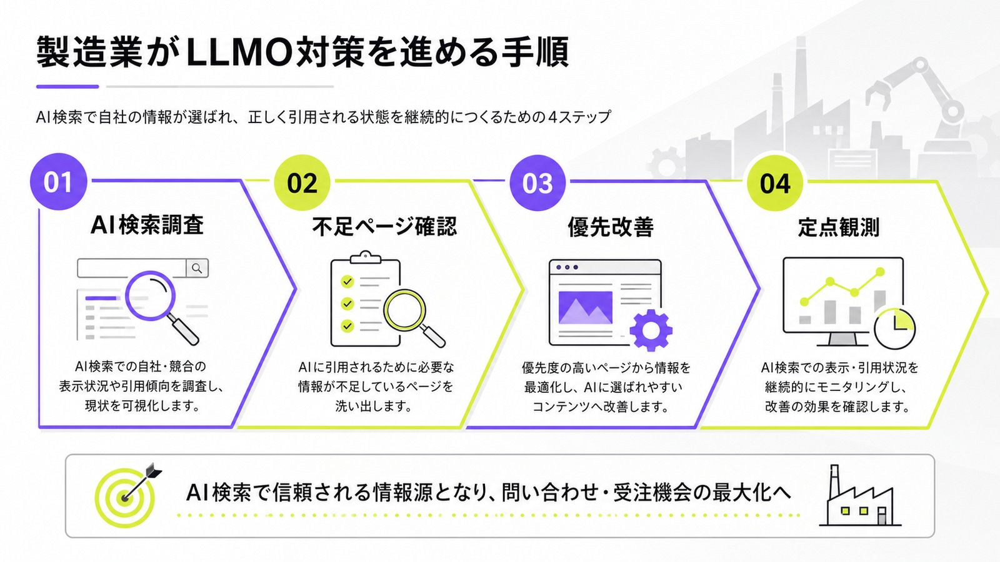

製造業のLLMO対策とは？AI検索で製品・技術・事例を引用されるための情報設計を解説

製造業のLLMO対策は、ChatGPT、Gemini、Perplexity、Google AI OverviewsなどのAI検索で、自社の製品・技術・導入事例を見つけてもらいやすくするための情報設計です。
製造業には、製品、加工技術、対応素材、設備、品質基準、納入実績など、AIが参照しやすい具体情報が多くあります。一方で、その情報がPDFカタログ、営業資料、社内資料に閉じていると、AIにも購買担当者にも伝わりにくくなります。
この記事では、製造業がAI検索で引用されるために、どのページを整備し、どの情報をHTML上に出し、どの順番で改善すべきかをわかりやすく解説します。AI検索対策の全体像はAI検索対策の記事でも整理しています。
目次

製造業におけるLLMO対策とは？
製造業におけるLLMO対策とは、自社の製品、加工技術、対応領域、導入事例をAI検索に理解されやすい形で公開し、AI回答内で候補として扱われやすい状態を作る取り組みです。
単にブログ記事を増やす施策ではありません。製品ページ、技術ページ、用途別ページ、事例ページ、FAQ、会社情報を横断して、AIにも人にも伝わる形に整理することが重要です。

AI検索で自社の製品・技術・事例が引用されるための対策
AI検索では、ユーザーが「耐熱性の高い部品を作れる会社」「小ロット試作に対応できる加工会社」「半導体装置向けの精密加工に強い会社」のように質問します。そのとき、自社サイトに製品・技術・事例が具体的に書かれていれば、AIが候補として拾いやすくなります。
逆に、製品名だけ、設備名だけ、抽象的な強みだけでは、AIは「どの課題に強い会社なのか」を判断しにくくなります。LLMO対策では、製品情報を検索者の疑問に答える形へ変えることが大切です。
SEOとの違いは「検索順位」だけでなく「回答内の採用」を狙う点
SEOは検索結果で上位表示されることを重視します。一方、LLMOではAIが回答を作るときに、自社情報が回答内の採用対象になるかが重要です。
“The best practices for SEO remain relevant for AI features in Google Search.”
つまり、LLMOはSEOと別物の裏技ではありません。検索エンジンがページを見つけ、内容を理解し、ユーザーに役立つ情報として扱えることが土台になります。そのうえで、AI回答に使われやすい定義、比較、FAQ、事例を整えます。基本の考え方はLLMO対策の記事でも解説しています。
製造業では「専門情報の分かりやすさ」が成果を左右する
製造業の情報は、型番、規格、素材、加工条件、設備名、検査方法などが多く、専門的になりやすい領域です。だからこそ、専門性を残しながら分かりやすく整理する必要があります。
購買担当者は、必ずしも現場技術者と同じ知識を持っているわけではありません。「何ができるのか」「どの条件に向いているのか」「どの業界で実績があるのか」まで説明すると、AIにも人にも伝わりやすくなります。
製造業がLLMO対策に取り組むべき理由
製造業では、問い合わせ前の情報収集が長くなりやすく、複数社を比較してから相談するケースが多くあります。AI検索がその入口になると、Web上の情報量と整理の仕方が、候補に入れるかどうかを左右します。
特にBtoBでは、AIに候補を聞いてから公式サイトを見る流れが広がる可能性があります。製造業のDXやAI活用が競争力と結びつく中で、Web上の技術情報を整えることは営業面でも重要です。
BtoBの購買担当者がAI検索で候補企業を探すようになるため
これまではGoogleで検索し、比較サイトや企業サイトを見ながら候補を探す流れが一般的でした。今後は、購買担当者が候補企業をAIに聞く場面も増えます。
たとえば「医療機器向けの樹脂加工に強い会社」「食品工場向けに洗浄しやすい部品を作れる会社」と聞かれたとき、自社サイトに該当する情報がなければ、実力があっても候補に入りにくくなります。
製品名だけでなく、課題・用途・業界名で探されるため
製造業の見込み客は、最初から正確な製品名や加工名を知っているとは限りません。「軽量化したい」「耐熱性を高めたい」「短納期で試作したい」など、課題・用途・業界名から探すことがあります。
そのため、製品名だけを並べるページでは不十分です。どんな用途に向いているか、どの業界で使われるか、どんな課題を解決できるかを本文に入れることで、AIが検索者の質問と自社情報を結びつけやすくなります。
製造業のDX・AI活用が競争力に直結するため
経済産業省の2025年版ものづくり白書でも、製造業の競争力強化に向けてDXが重要な取り組みとして整理されています。LLMO対策も、単なる集客施策ではなく、製品情報や技術情報を外部に伝わる形へ変える情報資産の再設計です。
営業資料、技術資料、過去の提案書、加工事例をWeb上で整理すると、AI検索だけでなく、商談、採用、広報、技術ブランディングにも使える情報になります。
製造業のLLMO対策で重要なコンテンツ設計
製造業のLLMO対策では、AIが「この会社は何に強いのか」を判断できる情報を用意する必要があります。特に重要なのは、製品ページ、技術ページ、導入事例、FAQです。
それぞれのページで、ただ情報を並べるのではなく、検索者が知りたい順番で説明することが大切です。
製品ページはスペックだけでなく用途・選び方まで書く
製品ページでは、型番、寸法、材質、対応規格などのスペックだけでなく、用途・選び方・違いまで書くことが重要です。
「この製品は何に使えるのか」「どんな条件では別製品が向いているのか」「代替品と何が違うのか」を説明すると、AIが比較回答に使いやすくなります。ユーザーにとっても、問い合わせ前の不安が減ります。
技術ページは加工方法・対応範囲・強みを明確にする
加工技術や製造技術のページでは、「〇〇加工に対応しています」だけでは弱いです。素材、加工精度、サイズ、ロット、設備、検査体制、納期目安などの対応範囲を具体的に書きます。
特に、競合と差が出る部分は抽象表現にせず、数値や条件で示すことが大切です。「短納期」よりも「試作は最短〇営業日から相談可能」のように書く方が判断材料になります。
導入事例は業界・課題・解決策・成果まで入れる
導入事例や加工事例は、製造業のLLMO対策で優先度が高いコンテンツです。AIは「実際に対応した経験があるか」を見るときに、事例を参照しやすくなります。
「〇〇を納品しました」だけではなく、業界・課題・解決策・成果まで書きます。社名を出せない場合でも、業界名、用途、規模、担当範囲を具体化すれば、十分に価値があります。
FAQは購買前の具体的な疑問に答える
FAQでは、「見積もりできますか？」のような一般的な質問だけでなく、購買担当者が実際に気にする購買前の具体的な疑問に答えることが重要です。
たとえば、小ロット対応、図面なし相談、試作から量産への移行、RoHSやISO対応、短納期対応、秘密保持の可否などです。こうした質問に明確に答えると、AI検索でも引用されやすい情報になります。
製造業のLLMO対策で作るべきページ
製造業では、ブログ記事だけを増やすより、公式サイト内の主要ページを整える方が先です。AIは会社の対応範囲を判断するために、製品カテゴリ、業界別、技術解説、比較、事例の情報を見ます。

製品カテゴリページ
製品カテゴリページでは、個別製品を一覧で並べるだけでなく、カテゴリ全体の特徴、用途、選び方、対応業界、よくある課題を説明します。
たとえば「精密板金加工」なら、対応素材、加工可能サイズ、表面処理、試作・量産対応、品質管理体制までまとめます。カテゴリ単位の比較質問に対して、AIが参照しやすくなります。
業界別・用途別ページ
同じ技術でも、業界によって訴求ポイントは変わります。医療機器向け、食品機械向け、半導体装置向け、自動車部品向けなど、業界別・用途別にページを分けると、AIが強みを判断しやすくなります。
業界別ページでは、その業界で重視される品質、衛生、耐久性、納期、ロット、規格への対応を書きます。指名検索以外の入口を増やすうえでも有効です。
技術・加工方法の解説ページ
技術解説ページでは、自社が対応する加工方法や製造工程を、初めて読む人にもわかる形で説明します。ただし、一般論だけでは差別化できません。
自社の設備や実績、失敗しやすいポイント、品質を安定させる工夫、対応できる条件を入れることで、独自性のあるページになります。
比較・選定ガイドページ
製造業の購買担当者は、製品や加工方法を比較しながら検討します。そのため、比較・選定ガイドはAI検索と相性がよいコンテンツです。
「アルミとステンレスの違い」「切削加工と板金加工の違い」「試作会社の選び方」「量産前に確認すべきポイント」などを整理すると、AIの比較回答に使われやすくなります。
導入事例・加工事例ページ
事例ページは、製造業の信頼性を伝えるための重要なページです。業界、課題、対応内容、使用素材、加工方法、成果、担当範囲を明記します。
社名公開が難しい場合でも、「自動車部品メーカー向け」「食品機械メーカー向け」「半導体製造装置向け」のように具体化できます。AIにも人にも、対応経験が伝わりやすくなります。
製造業のLLMO対策で見直すべき技術面
どれだけ良い文章を書いても、検索エンジンやAIが読めない状態では意味がありません。LLMO対策では、コンテンツと同時に、クロール、インデックス、構造化データ、PDFの扱いを確認します。

クロール・インデックスされる状態にする
AI検索で参照されるには、まず検索エンジンがページを発見し、インデックスできる状態である必要があります。GoogleのAI機能でも、特別な要件より、通常検索で表示できるページであることが前提になります。
重要ページがnoindexになっていないか、robots.txtでブロックされていないか、内部リンクからたどれるかを確認します。LLMO対策でも、クロール・インデックスの土台は外せません。
構造化データは製品・FAQ・企業情報を中心に整える
構造化データは、AI検索専用の魔法ではありません。ただし、検索エンジンがページ内容を理解する補助としては有効です。
製造業では、Organization、Product、FAQPage、BreadcrumbList、Articleなどを、本文と一致する範囲で整備します。ページに見えない情報を構造化データだけに入れるのではなく、本文でも確認できる状態にします。
PDFカタログだけに情報を閉じ込めない
製造業のWebサイトでは、製品情報や技術資料がPDFカタログだけに入っていることがあります。PDF自体が悪いわけではありませんが、主要情報がHTMLページにないと文脈を把握されにくくなります。
製品の特徴、用途、選び方、FAQ、事例などの主要情報はHTMLにも展開します。PDFは補足資料として残しつつ、AIにもユーザーにも読める本文を用意することが大切です。
製造業のLLMO対策で強化すべき外部情報
AI検索では、自社サイトだけでなく、外部サイト上の情報も参照されます。第三者のサイトで、どのような文脈で紹介されているかも重要です。
製造業では、業界メディア、展示会、認証、受賞、共同開発、導入企業の事例記事などが外部情報として効きます。
業界メディア・専門媒体での掲載情報を増やす
業界メディア、専門媒体、展示会サイト、協会サイトなどで自社が紹介されると、AIが参照できる情報源が増えます。特に専門領域が明確な会社は、外部での言及が信頼性の補強になります。
掲載されるときは、会社名だけでなく、カテゴリ名、加工技術、対応業界、用途も一緒に書かれるようにします。AIは複数の文脈から会社の強みを判断します。
展示会・認証・受賞・共同開発の情報を明記する
展示会出展、ISO認証、特許、受賞歴、共同開発、補助金採択などは、製造業の信頼性を示す情報になります。
これらは会社概要ページだけに置くのではなく、関連する製品ページや技術ページにも紐づけると効果的です。「どの領域で信頼できるのか」をAIが判断しやすくなります。
取引先名を出せない場合は業界・用途・規模で補う
NDAや取引先都合で企業名を公開できないケースは多くあります。その場合でも、業界・用途・規模を出すことで情報価値を高められます。
たとえば「自動車部品メーカー向け」「食品機械メーカー向け」「月間〇個規模の量産対応」のように書きます。実名がなくても、具体性があれば、AIにも購買担当者にも伝わります。
生成AI活用の流れと製造業LLMOの関係
生成AIの活用は、文章作成や業務効率化だけではありません。企業の中にある技術資料、営業資料、FAQ、提案書、加工事例を再整理し、外部に伝わる情報へ変えることにも役立ちます。
生成AIは業務効率化だけでなく価値向上にも関わる
IPAのDX動向2025でも、AIや生成AIの利活用が企業のDXに関わるテーマとして整理されています。製造業では、社内に眠っている資料をWebコンテンツへ変えることで、情報資産の再活用につながります。
たとえば、過去の提案書からFAQを作る、加工事例から用途別ページを作る、営業資料から比較表を作る、といった使い方です。LLMO対策は、AI検索だけでなく、自社の知見を社外に伝わる形にする取り組みでもあります。
参考：IPA｜DX動向2025
製造業がLLMO対策で避けるべき失敗
LLMO対策では、AIに拾われることだけを意識しすぎると失敗します。最終的に問い合わせや商談につなげるには、人間が読んでもわかりやすい情報にする必要があります。
汎用的なコラム記事だけを増やす
「製造業 DXとは」「AI活用とは」のような記事を増やすだけでは、LLMO対策として弱くなります。大切なのは、自社の製品、技術、現場知見に結びついた情報です。
一般論だけの記事では、AIにとってもユーザーにとっても差別化しにくくなります。一般論を書く場合でも、自社の対応領域、事例、相談導線につなげる必要があります。
専門用語を並べるだけで説明しない
製造業では専門性が重要ですが、専門用語を並べるだけでは伝わりません。使う場面や条件まで説明すると、AIもユーザーも理解しやすくなります。
たとえば、加工名だけでなく、向いている素材、避けるべき条件、よくある失敗、品質を安定させる工夫まで書きます。専門性は、説明して初めて価値になります。
自社の強みを抽象表現だけで終わらせる
「高品質」「短納期」「柔軟対応」「豊富な実績」だけでは、競合との差がわかりません。AIも、その表現だけでは強みを判断しにくくなります。
対応可能なロット、納期目安、加工精度、検査体制、対応素材、設備、業界実績などを出し、抽象的な強みを事実情報に変換します。
製造業のLLMO対策の進め方
製造業のLLMO対策は、一度にすべて直す必要はありません。まずAI検索で現状を確認し、足りないページを洗い出し、優先順位を決めて改善します。

まずはAI検索で自社・競合・製品カテゴリを調査する
最初に、自社名、競合名、製品カテゴリ、加工技術、業界用途をAI検索で確認します。自社・競合・カテゴリを同じ質問で比べると、不足している情報が見えやすくなります。
表示される会社、引用されるページ、強みとして説明される内容を記録します。AI回答の見え方を定期的に見る方法は、ChatGPTの引用率調査やAI Overviews表示調査の考え方も参考になります。
製品・技術・事例ページの不足を洗い出す
次に、AI検索で出てきた競合や情報源と比較し、自社サイトに足りないページを洗い出します。製品ページが薄いのか、技術解説が不足しているのか、業界別ページがないのか、事例が少ないのかを見ます。
製造業では、いきなり記事を量産するより、既存ページの強化の方が成果につながりやすいことがあります。問い合わせに近いページから直すのが現実的です。
優先順位を決めてページを改善する
すべてのページを一気に直す必要はありません。主力製品、利益率の高い技術、伸ばしたい業界、競合に勝てる用途から改善します。
ページごとに、対応範囲、用途、選び方、FAQ、事例、外部情報への導線を追加します。まずは問い合わせにつながる順に直すと、LLMO対策が営業成果にも結びつきやすくなります。
AI回答内の表示状況を定期的に確認する
LLMO対策は、一度ページを作って終わりではありません。AI検索での表示、自社名の出現、競合との比較、引用されるページ、問い合わせ内容の変化を定期的に確認します。
AI回答は固定ではないため、検索ニーズや競合ページの変化に合わせて改善を続ける必要があります。月1回など、確認する質問パターンを決めておくと運用しやすくなります。
まとめ：製造業のLLMO対策は「技術力をAIに伝わる情報へ変える」こと
製造業は、LLMO対策と相性がよい業界です。製品、技術、素材、設備、用途、実績など、AIが参照しやすい具体情報を多く持っているためです。
一方で、その情報がPDFカタログ、営業資料、社内資料、現場の暗黙知に閉じていると、AIにも購買担当者にも伝わりにくくなります。LLMO対策では、それらをWeb上でわかりやすく再構成する必要があります。
まずはブログ記事を量産するのではなく、製品ページ、技術ページ、業界別ページ、導入事例ページを強化しましょう。自社が何に強く、どの課題を解決でき、どの業界で実績があるのかを明確にすることが、AI検索時代の製造業サイトの土台になります。
参考リンク
参考：Google Search Central｜AI features and your website
参考：IPA｜DX動向2025